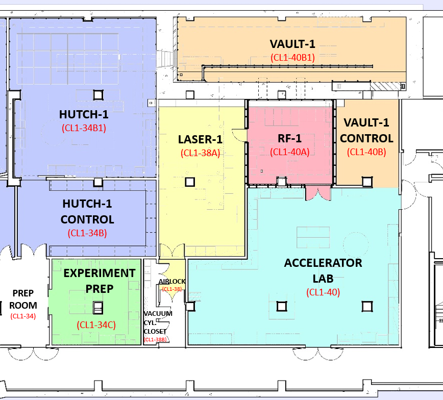

Welcome to CXLS Interlock System Documentation’s documentation!
About This Documentation
The purpose of this documentation is to provide a complete guide to the CXLS interlock system. This documentent will outline user guides to all interlock subsystems, as well as provide documentation on testing and troubleshooting the system.
CXLS Facility Overview
{kind=link}
Ionzing Radiation Hazards
In the CXLS linear accerator, the relativistic electrons can interact with materials of beampipes and LINACs. These interactions are Columb forces between the relativistic electrons and atomic nuclei within these materials where the electron experiences negative acceleration and releases a high energy photon, gamma radiation. This process is known as Bremsstrahlung. These emitted gamma rays can then interact with nuclei and through the process of photodisintegration neutron radiation is produced. Because of the high radiation feilds generated in Vault-1, this area is off limits during operations. As well, when x-rays are enabled into Hutch-1, this area is also off limits.
Laser Hazards
In the CXLS, there are three class 4 lasers used throughout the system. A UV laser is used at the photocathode to eject electrons in bunches via the photoelectric effect. Once these electrons are at relativistic speeds, they collide with an IR laser to induce inverse Compton scattering to produce hard x-ray pulses. These x-rays will interact with a test sample in pump-prove configuration where the pump laser can produce light in the THz spectrum. Because of these high power lasers through the facility, laser enclosures have been design to create laser safe areas while lasers are operational.
Note
This documentation is a work in progress. User Documentation is under development. Testing and Troubleshooting Documentation is pending development.